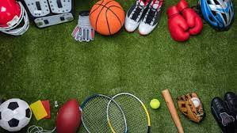
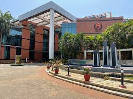

"Standing on the shoulders of giants," as Sir Isaac Newton eloquently stated,
I too draw inspiration from the profound wisdom of those who came before me.
In the spirit of continuous growth and innovation, my journey unfolds with a dynamic blend of technical proficiency
and a passion for diverse pursuits. Proficient in coding languages such as Python, C++, and C,
my exploration extends into the realms of AI/ML, electronics, and web development. Beyond the digital landscape,
I find joy in solving Rubik's cubes and excel in physical activities like badminton and swimming.
Having navigated diverse educational landscapes, excelling in CBSE and IGCSE boards with merit certificates,
I am currently in my second year at MIT. As the famous words suggest, I too aspire to contribute meaningfully,
standing on the intellectual shoulders of those who paved the way for innovation and growth.
In the dynamic realm of technology, my proficiency spans coding languages such as
Python, C++, and C, augmented by hands-on experience in AI/ML with ROS and Gazebo simulations.
I've seamlessly applied this expertise to electronics, particularly with Arduinos,
and successfully ventured into web development. This diverse technical skill set reflects not
only competence but also a passion for innovation and problem-solving.
Beyond the digital landscape, my versatility extends to recreational pursuits.
I adeptly solve Rubik's cubes, mastering challenges up to 7x7 and embracing variants like
Megamix, Mirror Cube, and Pyramix. On the sports front, I exhibit finesse in badminton and proficiency
in swimming, embodying a holistic approach to a well-balanced lifestyle.

Navigating an enriching educational journey across three schools,
I cultivated foundational knowledge until the 8th grade, subsequently excelling in both CBSE and IGCSE boards
during the 10th and 12th grades, respectively, earning merit certificates.
Currently navigating my second year at MIT, I actively contribute to a club and immerse myself in the
task phase of an engaging student project, demonstrating a commitment to personal growth and
collaborative innovation within the academic sphere.
